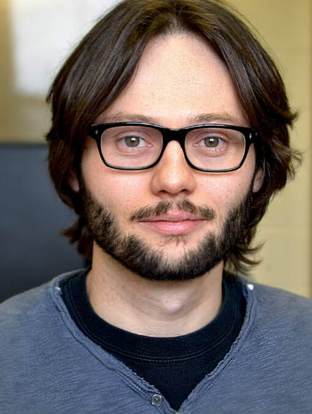
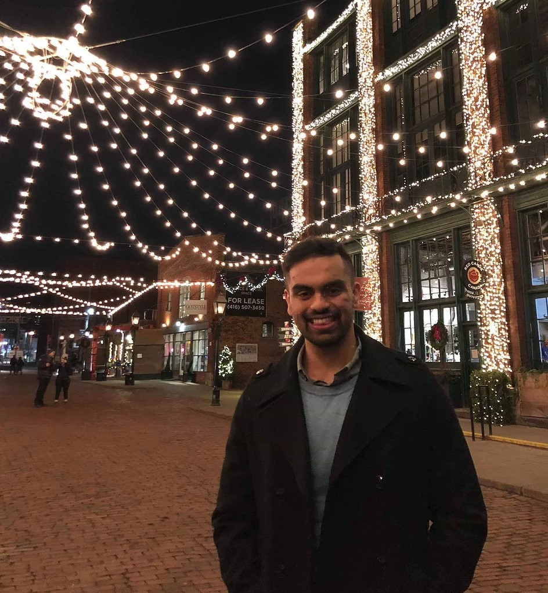
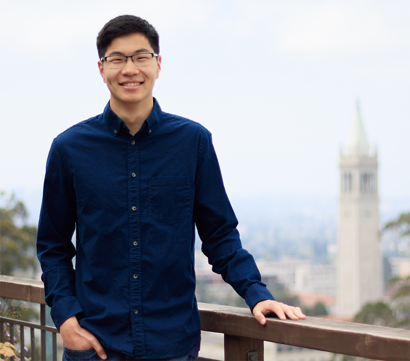
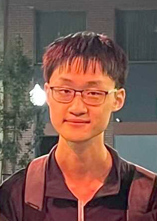
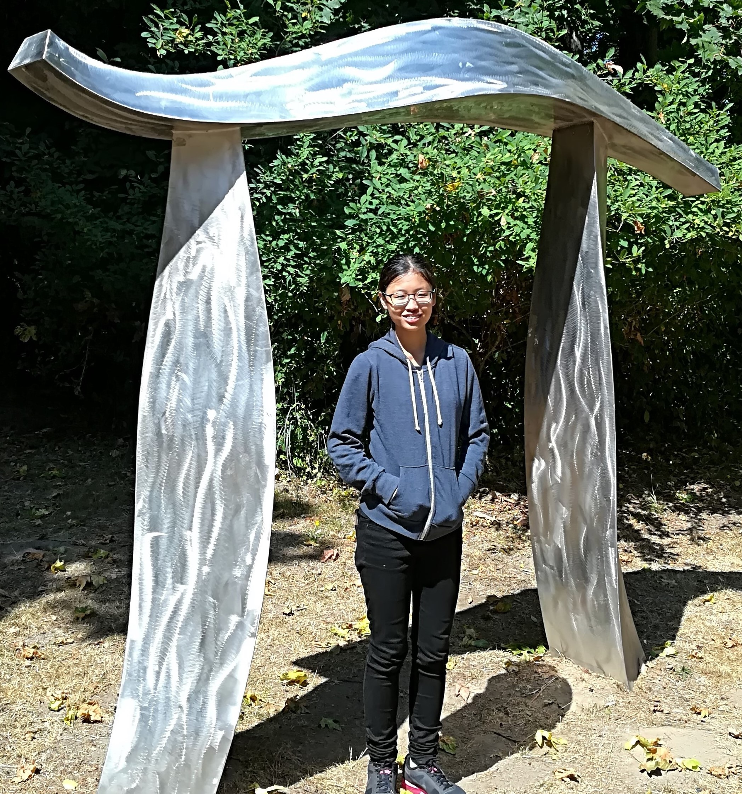
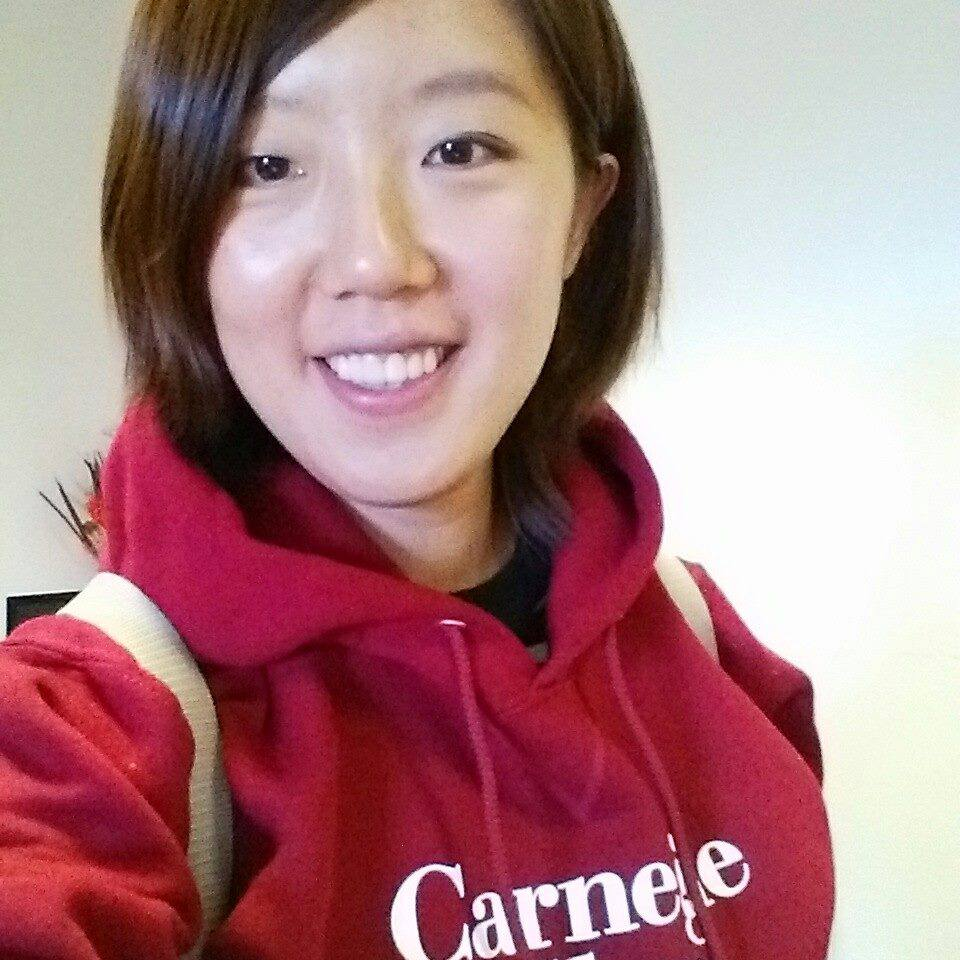
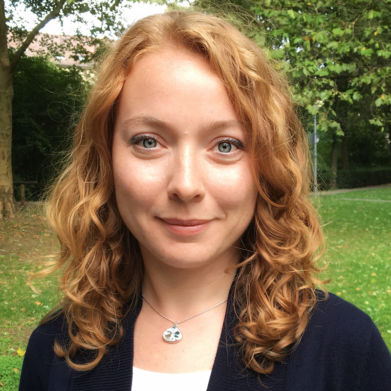

| 12:00 - 12:05 |
Opening remarks |
| 12:05 - 12:35 |
Keynote 1
Professor Hugo Larochelle (Google, Université de Montréal)

| Content & Format: AMA about research and how to get involved
Hugo Larochelle is the lead of the Google Brain team in Montreal, adjunct professor at Université de Montréal and a Canada CIFAR Chair. His research focuses on the study and development of deep learning algorithms.
|
| 12:40 - 13:10 |
Student Panel
Moderator: Samarth Sinha (Facebook)
Speakers: Stephen Tian (Stanford), Alex Yu (UC Berkeley) and Ching Lam Choi (CUHK, NVIDIA)




| Content & Format: Speakers on the student panel will reflect on how they kickstarted their career in CV, their experiences, challenges and rewards publishing Computer Vision research as undergraduates, and share insights on postgraduate prospects.
Sam: A fresh Bachelor's graduate from the University of Toronto, Sam is currently an AI Resident at Facebook London working with David Novotny and Andrea Vedaldi on 3D vision. He also works closely with Animesh Garg at the Vector Institute.
Stephen: Stephen is a first year PhD student in Computer Science at Stanford University, formerly working with Professor Sergey Levine and Professor Chelsea Finn at UC Berkeley's Robotic AI & Learning Lab. Stephen is also a recipient of the CRA Outstanding Undergraduate Researcher Award (Runner-up) 2021.
Alex: Alex is a recent CS & applied math graduate from UC Berkeley. Currently, he is working on 3D computer vision research with Professor Angjoo Kanazawa and is interested in the intersection of vision and graphics, particularly in volume rendering and neural representations.
Ching Lam: Ching Lam is a 2nd year undergraduate student at The Chinese University of Hong Kong (CUHK), supervised by Professor Hongsheng Li at the Multimedia Laboratory. She is fascinated by CV fields of generative models, representation learning and video understanding, and is simultaneously a research intern at NVIDIA.
|
| 13:15 - 13:45 |
Keynote 3
Dr. Nan Rosemary Ke Deepmind

| Content & Format: Talk on Machine Learning research and Q&A about how to get involved
Currently a Research Scientist at Deepmind, Rosemary's research centers around developing novel machine learning algorithms that can generalize well to changing environments. She focuses on credit assignment and causal learning, which can improve a model to adapt quickly to interventions, thereby avoiding a huge class of errors that impede systematic generalization, particularly out of distribution. She has recently been named a Rising Star in Machine Learning, and is a 2019 awardee of the Facebook fellowship.
|
| 13:50 - 14:50 |
Mingling Session
| Content & Format: We bring together speakers & participants, junior & senior researchers alike, to freely mingle, network and exchange ideas.
|
| 14:55 - 15:25 |
Keynote 2
Professor Zeynep Akata (University of Tübingen)

| Content & Format: Talk on Computer Vision research and Q&A about how to get involved
Zeynep Akata is a professor of Computer Science (W3) within the Cluster of Excellence Machine Learning at the University of Tübingen. She received a Lise-Meitner Award for Excellent Women in Computer Science from Max Planck Society in 2014, a young scientist honour from the Werner-von-Siemens-Ring foundation in 2019 and an ERC-2019 Starting Grant from the European Commission. Her research interests include multimodal learning and explainable AI.
|
| 15:30 - 16:00 |
Keynote 4
Professor Animesh Garg (University of Toronto, NVIDIA)

| Content & Format: AMA about Robotics research and how to get involved
Animesh Garg is an Assistant Professor of Computer Science at University of Toronto and a Faculty Member at the Vector Institute. He directs the UofT People, AI and Robotics (PAIR) group. He is affiliated with Mechanical and Industrial Engineering (courtesy) and UofT Robotics Institute. He is also a Sr. Research Scientist at Nvidia.
|
| 16:05 - 16:10 |
Closing remarks |